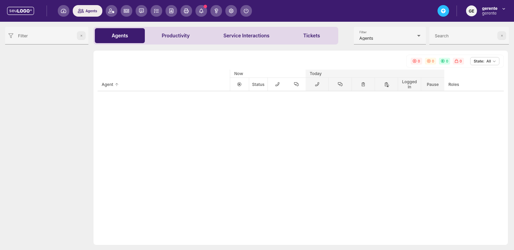
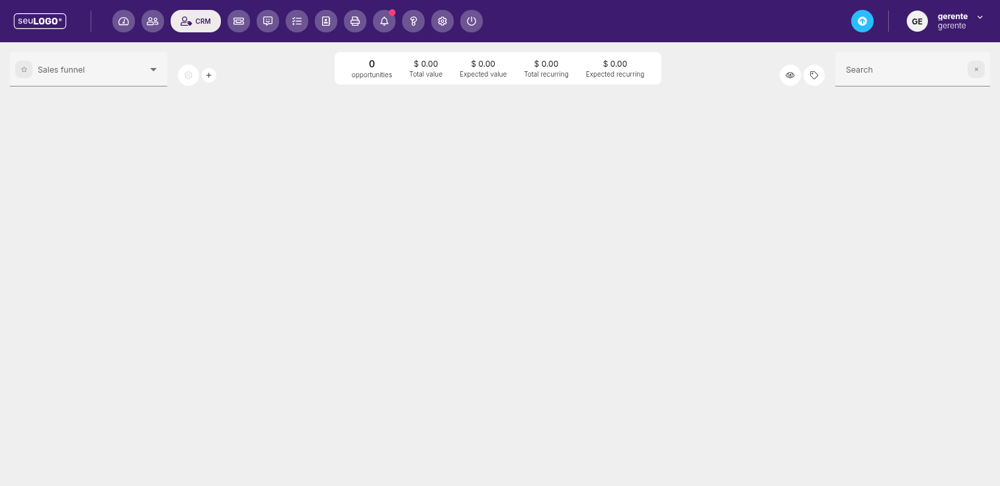
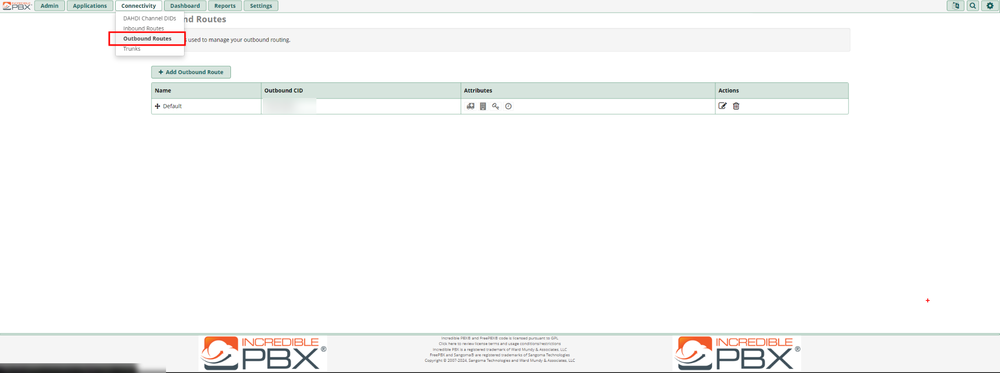
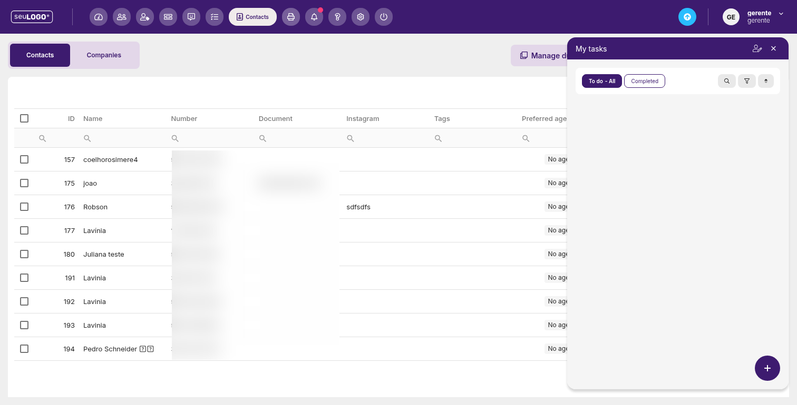
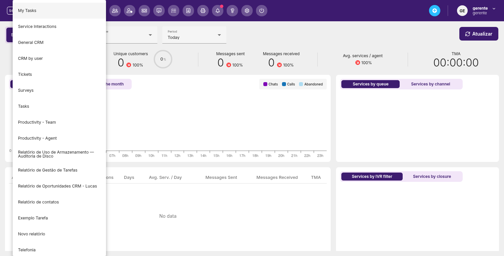
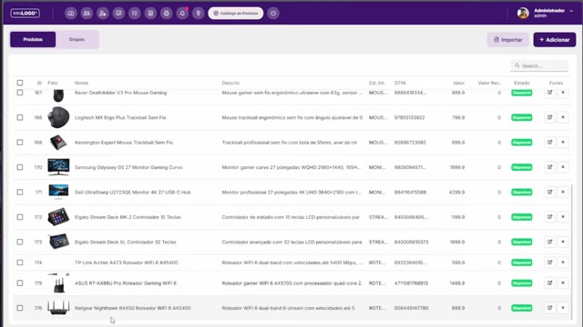

Conteúdo do manual
Cada capítulo foi elaborado a partir da interface real da plataforma. Clique para abrir.

Dashboard e Indicadores (KPI)
Como ler os KPIs de atendimento, os gráficos de contatos por hora/fila e a tabela de agentes.

Agent Dashboard (Agentes)
Acompanhe em tempo real o status dos atendentes: online, pausa, funções e indicadores do dia.

CRM e Funil de Vendas
Gerencie oportunidades, visualize o funil de vendas e acompanhe valores totais e recorrentes.
Carrinho Sincronizado com CRM
Transforme o carrinho de produtos do atendimento em uma oportunidade de CRM sincronizada ao vivo, com catálogo, etapas e automação de preço.

Tickets (Mesa de Ajuda & Configurações)
Operação no quadro Kanban, filtros, matriz de SLA, classificações, motivos, campos personalizados e automações.
FAQ — Tickets e Automações
As 15 dúvidas mais frequentes dos usuários sobre o módulo de Tickets: níveis, motivos, templates, SLA, estágios, automações e variáveis.

PABX Fácil e Telefonia VoIP
Arquitetura do FreePBX/Asterisk, integração com WhatsApp Cloud API, criação de ramais, URAs e análise de CDR.

Chat Interno
Converse com a equipe internamente, sem expor o cliente, com atalhos e anexos.

Tarefas (My tasks)
Crie e acompanhe tarefas pendentes e concluídas diretamente no painel de trabalho.

Contatos e Empresas
Visualize, importe, exporte e gerencie duplicados na base de contatos e empresas.

Relatórios
Histórico de chats, filas, pausas, gravações, produtividade e muito mais.

Relatórios Personalizados
Dashboards e relatórios customizados (CRM, produtividade, telefonia, CDR e mais).

Configurações
Filas, usuários, pausas, campanhas, automações, rótulos e demais ajustes do sistema.

Catálogo de Produtos
Cadastre ou importe produtos, conecte ao catálogo do WhatsApp (Meta) e automatize o fluxo de pedidos na Cloud API.
Extensões (Micro-Frontends & SDK)
Aprenda a instalar, gerenciar e programar micro-frontends interativos e workers em segundo plano usando o SDK omni do AtenderBem.